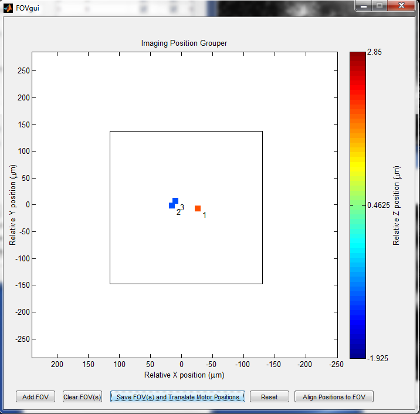

Group by FOV (FOVgui)

Note: although it is currently possible to create multiple FOVs, this is not fully supported/tested by the software. Only use one FOV.
- Add FOV
- Add an FOV to group the displayed motor positions. Once the FOV is added, you can drag it around to include all the positions. For imaging quality, It is better to have the positions at the center of the FOV.
- Save FOV and Translate Motor Positions
- Once an FOV is set, this button saves it and translates the XY motor positions to Scan Shift positions. Therefore, only the Z motor will move between positions, while the XY motor will remain constant.
- Reset
- Use to deal with any errors generated in the FOVgui.
- Align Positions to FOV
- Once motor positions are translated to an FOV, this button can be used to automatically align them all to their new motor position and scan shift by using their reference images. BUT, this doesn't always work and can mess up your positions even more, so I suggest to do this step manually unless you're confident that it will work.
Created with the Personal Edition of HelpNDoc: Easily create Help documents